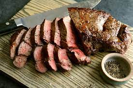

Pan Seared Steak

A delicious and easy to do recipe for steak lovers like myself!
This recipe is simple to do, doesn't take too much prep and can really be done with most household seasonings.
Or if you want to get fancy you can add other herbs and spices for added flavor as you get more comfortable searing and cooking your steak!
All you will need is a cut of meat of your choice, whether it be ribeye, new york strip, or anything other cut of meat.
As for cooking utensils, you'll just need a pan, this can be a flat iron pan, or a non-stick pan. Just something big enough for your cut of meat!
Ingredients
- Your choice of meat
- Salt
- Pepper
- Olive Oil
- Butter
Steps
- Pat your steak with a dry paper towel on both sides and edges. Season steak with salt and pepper. Be sure to cover both sides of your steak and let rest.
- While steak is resting, get pan on stove over medium high heat.
- Once the pan is hot, add your olive oil and let the olive oil warm up. (You should started to see the olive oil begin to steam)
- Place seasoned steak into your pan. It should be sizzling! Let your steak sit for atleast two minutes. After two minutes flip your steak and repeat. After those two minutes, place the steak on its side in the pan to sear the edges, and repeat for all four sides
- Once all sides of your steak are browned (it should be slightly charred from the salt and pepper and any other seasonings your may have put on your steak) Add your butter right into the pan. It should be about half a stick of butter in total, but be sure to spread the butter around the pan.
- Now with the butter all melted in the pan you should begin to baste your steak, which is to take a spoon and cover the steak in the melted butter. You should be continuously basting one side of your steak for 20-30 seconds and then flip and repeat. Repeat this process for about 3-5 minutes depending on how you like your steak cooked.(Medium, Medium-rare, rare, etc.) A good way to tell is by how firm the steak is to the touch. The more firm the steak to the touch to more cooked the steak is. If you don't want to touch your steak you can also use a meat thermotater. You can click here!
- Once you have your steaked cooked how you like, take the steak off the pan and let it rest for a minimum of five minutes. A good rule of thumb is to let the steak rest for how long it was cooked for. But not a neccessity!